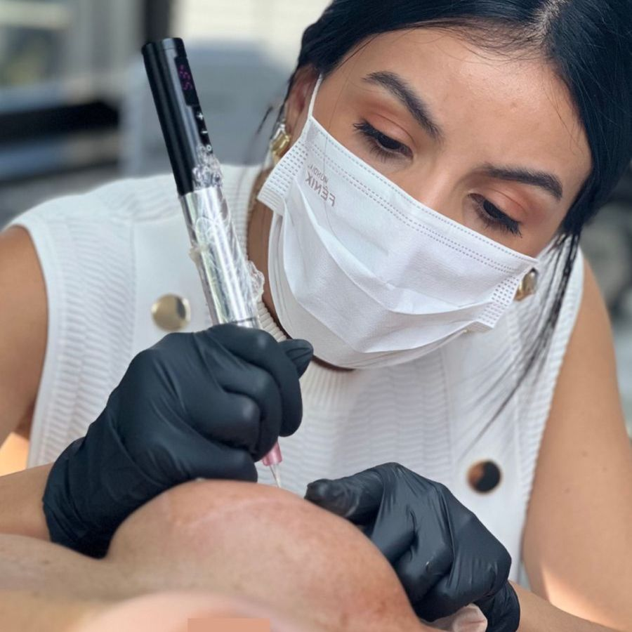

Micropigmentação paramédica
Reconstrução de aréola, realismo, naturalidade e harmonia.
Devolvo cor, contorno e volume à aréola depois de mastectomia, mastopexia ou mamoplastia. Quando a cicatriz precisa, trato a pele com Nano Repair antes de pigmentar, para um resultado mais natural e duradouro.

Para quem é
Situações que eu atendo com frequência
Muita gente chega achando que o caso não tem solução. Na maioria das vezes, tem. O que muda é o caminho.
Após mastectomia
Quando a mama já foi reconstruída e falta a aréola. A pigmentação devolve a cor, o contorno e a percepção de volume do mamilo.
Cicatriz de mastopexia ou mamoplastia
Cada pele cicatriza de um jeito. Às vezes a cicatriz ao redor da aréola fica mais clara, mais larga ou com textura diferente. Primeiro cuidamos da pele, depois devolvemos o tom.
Necrose areolar
Em casos de perda total ou parcial a pigmentação e o preparo da pele podem ser associados para devolver a harmonia.
Assimetria de cor ou formato
Aréolas com tons ou tamanhos diferentes entre si, ou com perda de cor. O objetivo é harmonizar com naturalidade.
Nem sempre o primeiro passo é pigmentar. Às vezes é preciso preparar a pele para alcançar um resultado mais delicado, natural e duradouro.
Como eu penso cada caso
Pele cicatricial não se comporta como pele íntegra. Ela pode ser mais fina, ter relevo ou ter alterado a cor. Se o pigmento for aplicado sem olhar para isso, o resultado tende a ficar irregular ou a desbotar antes do tempo.
Por isso, em alguns casos eu começo pelo Nano Repair, que trata a textura e a qualidade da cicatriz. Só depois vem a pigmentação.
Essa decisão acontece na avaliação, junto com você. Não existe um protocolo único que sirva para todo mundo.
Como funciona
As etapas do tratamento
O tempo entre uma etapa e outra é definido na avaliação.
- Etapa 1
Avaliação
Conversa, análise da pele e da cicatriz, e alinhamento com a liberação do seu médico.
- Etapa 2
Preparo da pele
Nano Repair quando a cicatriz precisa de tratamento antes da cor. Nem todo caso precisa.
- Etapa 3
Desenho e cor
Formato, tamanho e posição desenhados no corpo. A cor é preparada para o seu tom de pele.
- Etapa 4
Pigmentação
Aplicação do pigmento com luz e sombra para dar a percepção de volume do mamilo.
- Etapa 5
Acompanhamento
Depois da cicatrização, revisamos a cor e ajustamos o que for preciso.
Para médicos e equipes cirúrgicas
Uma continuidade do tratamento iniciado pelo médico.
A cirurgia reconstrói a mama. Meu trabalho entra depois, quando a paciente já tem a liberação e a cicatriz está estável, para complementar o resultado.
O protocolo parte do resultado cirúrgico e respeita o seu tempo de acompanhamento. Cada pele cicatriza de um jeito, e por isso a primeira decisão é sobre a qualidade do tecido. Quando a cicatriz tem textura ou relevo, faço o Nano Repair antes de pigmentar. Quando a pele já está pronta, sigo direto para a cor.
A paciente sai do seu consultório com um próximo passo claro. E você continua sabendo como ela está.
No Instagram eu mostro casos acompanhados e o raciocínio por trás de cada decisão, do preparo da pele até o retorno.
- Equipe médica
Cirurgia
Mastectomia com reconstrução, mastopexia, mamoplastia.
- Equipe médica
Acompanhamento e liberação
A paciente só inicia a pigmentação com a liberação do médico.
- TM Clinic
Avaliação da cicatriz
Análise do tecido e planejamento.
- TM Clinic
Nano Repair (quando indicado)
Tratamento da textura e da qualidade da cicatriz para receber o pigmento.
- TM Clinic
Pigmentação e acompanhamento
Construção da aréola com harmonia e naturalidade.
Tratamento multidisciplinar
Nenhum procedimento começa antes da liberação médica.
Comunicação aberta
Compartilho o plano definido na avaliação e a evolução da paciente.
É complemento, não correção
A reconstrução de aréola é uma etapa natural depois da cirurgia. É assim que eu apresento o tratamento para as pacientes.
Sobre a Tabata
Tabata Moraes
Sou especialista em micropigmentação paramédica e atendo na TM Clinic, na Vila Nova Conceição, em São Paulo. Meu trabalho é olhar para cada paciente e decidir, a partir do que ela apresenta, qual é o melhor caminho para aquele caso.
Eu me importo com o que acontece depois do procedimento: como você se sente ao se olhar, ao se trocar, ao seguir a vida. É por isso que não aplico a mesma fórmula em todo mundo.
Esteticista, micropigmentadora especialista na área paramédica e premiada em aréolas realistas, já são mais de 10 anos transformando vidas com a micropigmentação.
Dúvidas frequentes
O que costumam me perguntar
Quando posso fazer depois da cirurgia?
Só depois da liberação do seu médico e quando a cicatriz já estiver estável. O tempo varia de pessoa para pessoa, e é algo que a gente avalia junto.
Dói?
Depende muito da região e da sensibilidade de cada pele. Em áreas reconstruídas a sensibilidade costuma ser menor. Na avaliação eu explico o que esperar no seu caso.
Como é escolhida a cor da aréola?
Não existe uma cor pronta, ela é misturada na hora, a partir do seu tom de pele e da outra aréola quando ela existe. Por isso dois casos parecidos quase nunca saem com a mesma cor.
A cor fica natural?
Sim, uso variações de tom e pontos de luz e sombra para dar profundidade e a sensação de volume do mamilo. No retorno, a cor é ajustada quando necessário.
Quanto tempo dura?
A micropigmentação clareia aos poucos com o tempo, e a velocidade depende da pele, da exposição ao sol e dos cuidados. Retoques periódicos mantêm a cor.
Preciso fazer Nano Repair antes?
Nem sempre. Ele é indicado quando a cicatriz tem textura, relevo ou qualidade que prejudicariam a fixação do pigmento. Isso se decide na avaliação.
Quantas sessões são necessárias?
No geral 2 sessões, a pigmentação e o retorno. Casos com preparo de pele têm sessões a mais. Cada caso tem seu próprio plano.